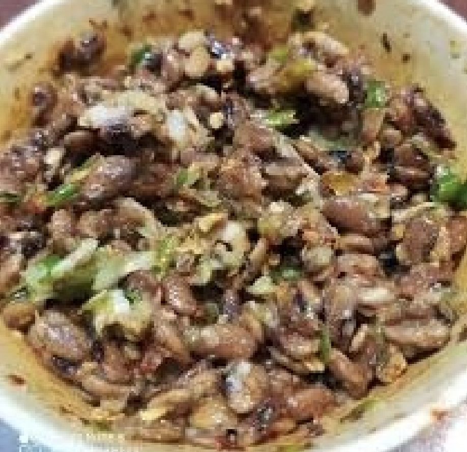
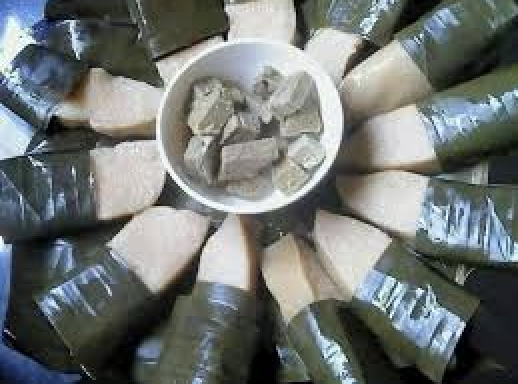

FOOD VARIETIES
Famous Dishes of Mizoram 🍽️
Bai 🥦🍲 – A traditional Mizo stew made with boiled vegetables, bamboo shoots, local herbs, and sometimes pork or fish.
Bamboo Shoot Fry 🎋🍛 – A delicious dish made with stir-fried bamboo shoots, spices, and sometimes meat.

Misa Mach Poora 🦐🔥 – Grilled shrimp marinated with local spices and herbs, cooked over charcoal.
Bekang Fermented Soybean 🫘 – A traditional fermented soybean dish, often used as a side dish or flavor enhancer.


Chhum Han 🍲🌿 – A simple and healthy dish made with steamed vegetables and mild spices.
Zu (Mizo Tea) 🍵 – A popular Mizo beverage, served as black tea, milk tea, or even flavored with local herbs.
.webp)
Popular Street Foods 🌮🥤

Sanpiau 🍛 – A popular Mizo snack made of rice porridge topped with crushed black pepper, coriander, spring onions, and crispy fried noodles.
Vawksa Rep 🍖🔥 – Smoked pork served as a street-side delicacy, flavored with local herbs and bamboo shoots.


Koat Pitha 🍩 – A crispy, deep-fried rice and banana fritter, slightly sweet and perfect as a tea-time snack.
Bamboo Shoot Pickle 🎋🌶️ – A tangy and spicy street-side pickle made from fermented bamboo shoots and local spices.


Chhangban 🍚 – A sticky rice cake, often enjoyed with tea as a light snack.
Mizo Chow 🍜 – A local version of stir-fried noodles, made with fresh vegetables, egg, and sometimes chicken or pork.


Paknam 🐟🍃 – A steamed dish made of fish, mustard leaves, and local herbs, wrapped in banana leaves.
Sawhchiar 🍲 – A hearty and comforting rice and meat porridge, commonly sold at food stalls.